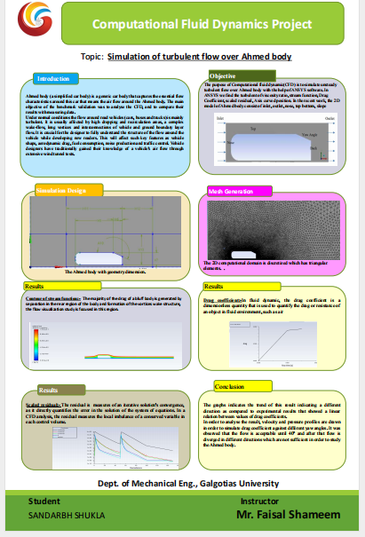
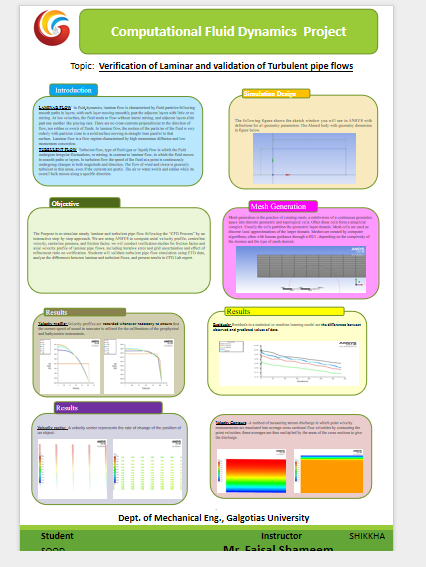
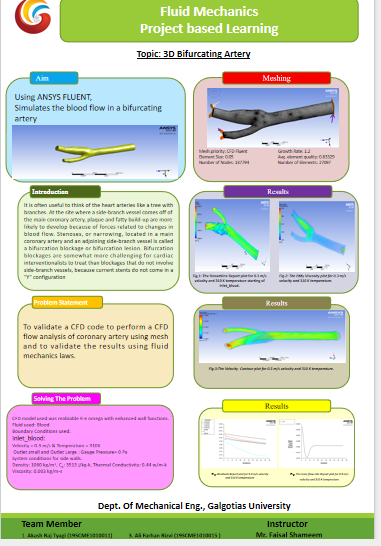
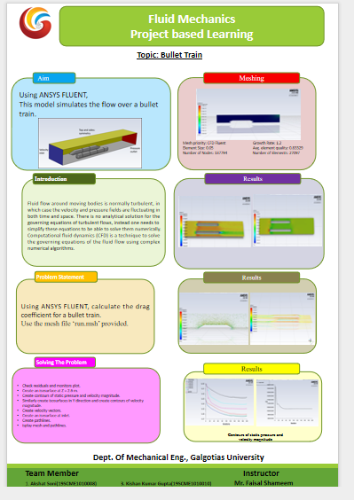

Project Based Learning
Experience-led education through real-world engineering challenges. This section features student projects, technical prototypes, and hands-on simulation achievements.
View All Project Materials (Google Drive)